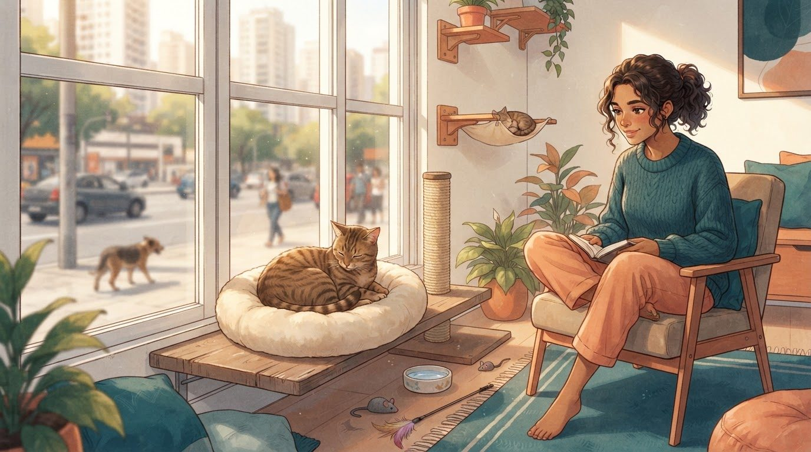
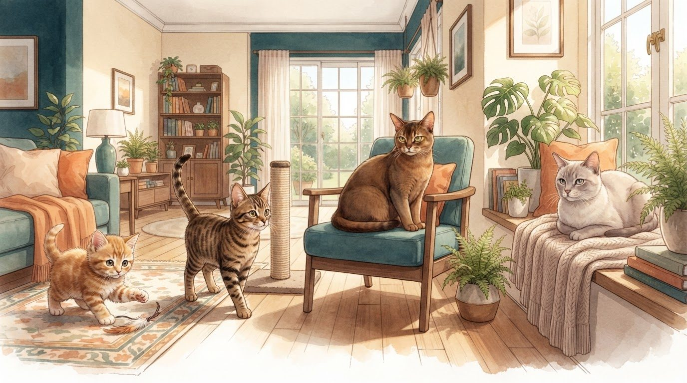
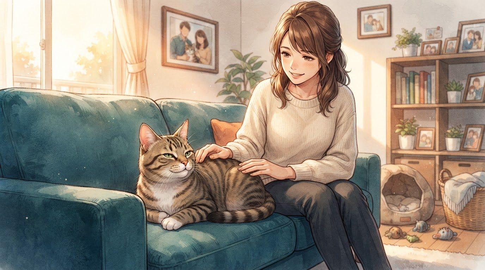
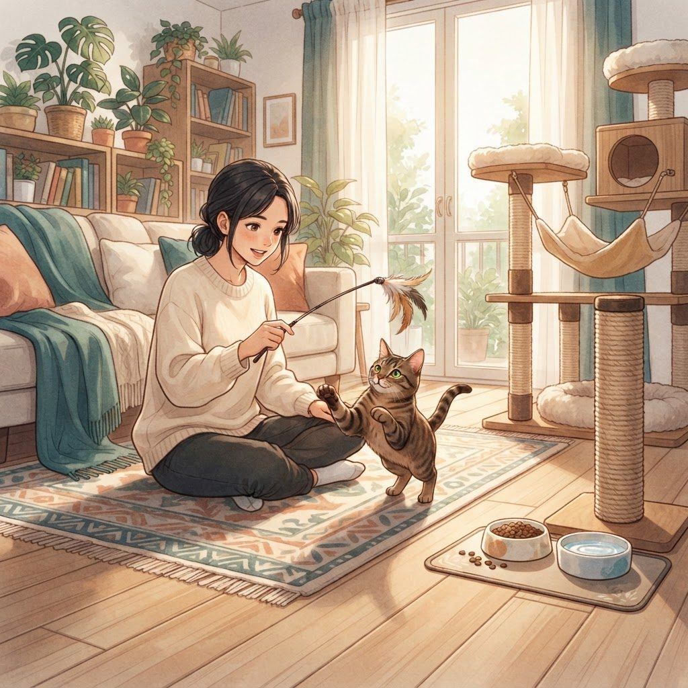
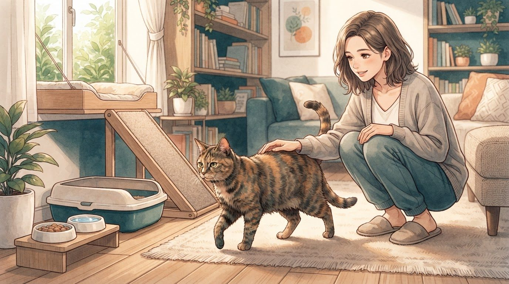
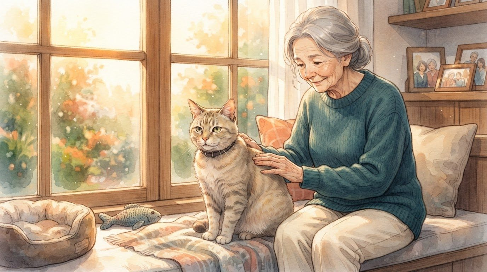

"Eu já me peguei olhando para um gato dormindo no sofá e pensando: 'Quantos anos ainda vou ter ao lado dele?'"
É uma pergunta difícil porque, quando um gato entra na nossa vida, raramente pensamos no fim dela. Pensamos nas brincadeiras, nos miados, naquele jeito de aparecer justamente quando estamos ocupados e até na mania de escolher a caixa mais simples em vez do brinquedo caro.
Mas existe uma boa notícia: os gatos domésticos de hoje podem viver muito mais do que muita gente imagina. Com alimentação adequada, cuidados veterinários e um ambiente seguro, não é incomum encontrar gatos chegando aos 15, 18, 20 anos ou até mais. A Cornell University, por exemplo, relata que atualmente não é incomum que gatos vivam até os 20 ou 21 anos.
Então, se eu tenho um gato de 10 anos, não deveria simplesmente pensar que ele está "no fim". Ele pode estar entrando em uma fase diferente da vida — e ainda ter muitos bons anos pela frente.
1. Afinal, quanto tempo vive um gato?
Se eu precisasse dar uma resposta rápida, diria que um gato doméstico pode viver aproximadamente 14 anos em média, mas existe uma variação enorme entre indivíduos.
A International Cat Care utiliza uma expectativa média de aproximadamente 14 anos ao estabelecer suas fases de vida, mas também destaca que muitos gatos chegam ao final da adolescência e alguns ultrapassam bastante essa idade.
Na prática, eu pensaria assim:
- 10 anos: já é um gato maduro, mas ainda pode ter bastante tempo pela frente
- 12 anos: entra na faixa considerada sênior
- 15 anos: já é um gato super sênior
- 18 anos: é um gato bastante longevo
- 20 anos ou mais: é possível, embora não seja a realidade da maioria
E existe uma diferença importante entre expectativa média e limite máximo.
Se uma população de gatos apresenta determinada média de idade, isso não significa que meu gato obrigatoriamente seguirá aquele número.
Um estudo realizado com mais de 3 mil gatos encontrou uma mediana de sobrevivência de aproximadamente 9 anos entre os animais avaliados, mas essa pesquisa foi baseada em registros de necropsia de uma única instituição e não deve ser interpretada como uma expectativa universal para todos os gatos domésticos.
Por isso, eu não usaria uma média para fazer uma contagem regressiva.
Eu usaria a média para entender melhor as necessidades do meu gato.
2. Gato que vive dentro de casa vive mais?

Essa é uma das perguntas que eu considero mais importantes.
De maneira geral, um ambiente interno controlado pode reduzir vários riscos aos quais um gato exposto à rua está sujeito.
Quando meu gato tem acesso livre à rua, ele pode estar mais exposto a acidentes, brigas, doenças infecciosas, parasitas, envenenamentos e outros perigos.
Um estudo retrospectivo com 3.108 gatos encontrou diferenças na idade de morte de acordo com o ambiente: os gatos classificados como exclusivamente externos apresentaram uma mediana de idade ao morrer menor que os gatos classificados como exclusivamente internos ou com acesso interno/externo.
Mas eu teria cuidado para não transformar isso em uma regra absoluta.
Viver dentro de casa não significa automaticamente viver muitos anos.
Um gato que passa toda a vida dentro de um apartamento, mas é obeso, sedentário, mal alimentado ou não recebe acompanhamento veterinário adequado também pode desenvolver problemas de saúde.
Por isso, quando penso em longevidade, eu não separo as coisas.
Eu quero um gato seguro, ativo, bem alimentado, acompanhado e mentalmente estimulado.
E se meu gato vive exclusivamente dentro de casa, eu também preciso oferecer oportunidades para ele explorar, brincar, subir, observar o ambiente e expressar comportamentos naturais.
Uma casa segura não precisa ser uma casa sem estímulos.
3. Como saber em que fase da vida meu gato está?

Uma coisa que mudou bastante minha forma de pensar sobre idade felina foi perceber que não existe apenas "filhote, adulto e idoso".
A International Cat Care e a ISFM trabalham com seis fases de vida: filhote, júnior, adulto, maduro, sênior e super sênior.
Eu posso visualizar assim:
| Fase | Idade aproximada |
|---|---|
| 🐱 Filhote | 0–6 meses |
| 🐈 Júnior | 7 meses–2 anos |
| 🐈 Adulto | 3–6 anos |
| 🐈 Maduro | 7–10 anos |
| 🐈 Sênior | 11–14 anos |
| 🐈 Super sênior | 15+ anos |
Isso é muito mais útil do que simplesmente chamar qualquer gato acima de 7 anos de "velho".
Um gato de 8 anos, por exemplo, está na fase madura, enquanto um gato de 15 anos já é considerado super sênior.
E existe outra coisa interessante: os primeiros anos de vida felina não equivalem simplesmente a sete anos humanos por ano.
Segundo a Cornell, um gato de um ano apresenta uma idade fisiológica semelhante à de um humano de aproximadamente 16 anos; aos dois anos, seria equivalente a cerca de 21 anos. Depois disso, cada ano felino corresponde aproximadamente a quatro anos humanos.
É por isso que aquela velha regra de multiplicar a idade do gato por sete não funciona muito bem.
4. Quando meu gato começa a envelhecer de verdade?

Essa pergunta pode ser mais difícil de responder do que parece.
Eu poderia olhar para um gato de 10 anos e pensar: "Ele ainda brinca, então está tudo bem."
Mas envelhecimento não acontece necessariamente de uma hora para outra.
Segundo a Cornell University, muitos gatos começam a apresentar mudanças físicas relacionadas à idade entre 7 e 10 anos, e a maioria já apresenta algum grau dessas mudanças por volta dos 12 anos.
E aqui existe uma armadilha.
Eu não deveria atribuir automaticamente qualquer mudança à idade.
Se meu gato de 12 anos começa a dormir mais, por exemplo, isso pode ser simplesmente uma mudança natural. Mas também pode estar relacionado a dor, artrite, doença dentária ou outra condição que merece avaliação veterinária.
O mesmo vale para:
- perder peso
- beber mais água
- urinar mais
- deixar de usar a caixa de areia
- parar de subir em lugares que antes adorava
- ficar mais isolado
- mudar o apetite
- vocalizar mais
- deixar de se limpar adequadamente
Eu não chamaria isso simplesmente de "coisa de gato velho".
Envelhecimento é natural. Doença não deve ser confundida com envelhecimento.
5. O que pode fazer um gato viver mais?

Aqui está a parte que mais me interessa.
Eu não consigo controlar completamente a genética do meu gato. Também não posso garantir que ele nunca desenvolverá uma doença.
Mas existem decisões que estão nas minhas mãos.
A primeira é a alimentação adequada.
Manter o peso saudável também é importante. Tanto o excesso quanto a perda de peso podem ser sinais de que alguma coisa precisa ser investigada. A Cornell destaca que gatos idosos podem ganhar peso ou, ao contrário, perder peso por diferentes razões, incluindo problemas de saúde.
Eu também manteria:
- água fresca sempre disponível
- alimentação adequada à fase da vida
- atividade física
- brincadeiras
- enriquecimento ambiental
- higiene dental
- acompanhamento veterinário
- vacinação e prevenção conforme orientação profissional
E prestaria atenção ao comportamento.
Gatos são especialistas em esconder sinais de doença. A Cornell destaca justamente essa característica: um gato pode apresentar um problema significativo sem demonstrar sinais muito óbvios até que a condição esteja mais avançada.
Por isso, eu considero muito mais importante conhecer o comportamento normal do meu próprio gato do que decorar uma lista enorme de sintomas.
Se ele normalmente corre para a cozinha quando escuta o pote de ração e, de repente, deixa de fazer isso, eu percebo.
Se normalmente sobe na janela e passa a evitar saltos, eu percebo.
Essas pequenas mudanças podem ser valiosas.
6. Meu gato está ficando velho. O que posso mudar em casa?

Quando meu gato envelhece, eu não penso apenas em consultas e medicamentos.
Também penso na casa.
Um gato jovem consegue saltar para praticamente qualquer lugar. Um gato idoso pode continuar querendo chegar ao mesmo lugar, mas talvez seu corpo já não permita fazer isso com a mesma facilidade.
A Cornell recomenda facilitar o acesso de gatos idosos aos locais que eles gostam, utilizando recursos como rampas ou degraus quando necessário. Também pode ser importante adaptar a caixa de areia para facilitar a entrada e garantir acesso fácil à água, comida e locais confortáveis de descanso.
Eu também observaria se ele está conseguindo:
- entrar e sair da caixa de areia
- alcançar comida e água
- subir em seus lugares favoritos
- se limpar adequadamente
- descansar confortavelmente
- se movimentar sem demonstrar dor
E manteria uma rotina previsível.
Gatos idosos podem ter mais dificuldade para lidar com mudanças no ambiente, e uma rotina familiar pode ajudá-los a se sentirem mais seguros.
Às vezes, envelhecer bem não significa fazer algo extraordinário.
Significa simplesmente tornar a vida cotidiana um pouco mais fácil.
7. Meu gato pode chegar aos 20 anos?

Pode. E essa é uma das partes mais bonitas da história.
Eu não teria como prometer que um determinado gato chegará aos 20 anos. Seria irresponsável.
Mas sabemos que gatos podem alcançar idades bastante avançadas. A Cornell relata que atualmente não é incomum encontrar gatos vivendo até os 20 ou 21 anos, e registra casos de gatos que chegaram ainda mais longe.
A International Cat Care também reconhece uma categoria específica para gatos com 15 anos ou mais, chamada de "super senior".
Então, quando olho para meu gato de 12, 14 ou 16 anos, eu não quero pensar apenas: "Ele está velho."
Eu prefiro pensar: "Ele entrou em uma fase da vida em que precisa de cuidados diferentes."
Talvez ele precise de uma caixa de areia mais acessível. Talvez prefira uma cama mais quente. Talvez já não consiga pular tão alto. Talvez precise de consultas mais frequentes. Talvez queira brincar por cinco minutos em vez de meia hora.
Tudo isso faz parte.
No final, a pergunta "quanto tempo vive um gato?" tem uma resposta estatística, mas não uma resposta individual.
Alguns gatos viverão 12 anos. Outros chegarão aos 15. Alguns passarão dos 20.
Eu não consigo escolher exatamente quantos anos terei ao lado do meu gato.
Mas consigo escolher como vou cuidar dele durante esses anos.
E talvez seja essa a parte mais importante de todas.
Importante: expectativa de vida é uma estimativa populacional e não permite prever quanto tempo um gato específico viverá. Genética, ambiente, alimentação, doenças, acesso à rua e qualidade dos cuidados podem influenciar a longevidade. Alterações de comportamento, apetite, peso, sede, mobilidade ou uso da caixa de areia devem ser discutidas com um médico-veterinário.
Fontes e referências
- Cat Friendly Clinic: A Guide to Feline Wellness Programmes — International Cat Care
- Loving Care for Older Cats — Cornell Feline Health Center
- The Special Needs of the Senior Cat — Cornell Feline Health Center
- How Old Is Your Cat? — International Cat Care
- Longevity and Mortality in Cats: A Single Institution Necropsy Study of 3108 Cases — PLOS ONE / PMC